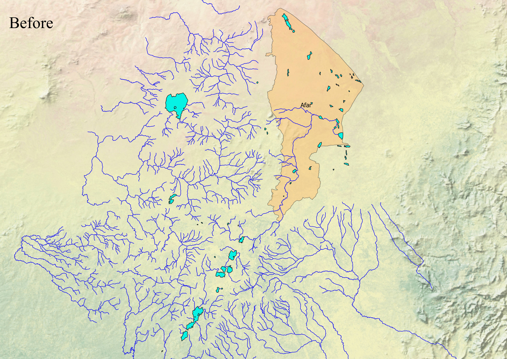
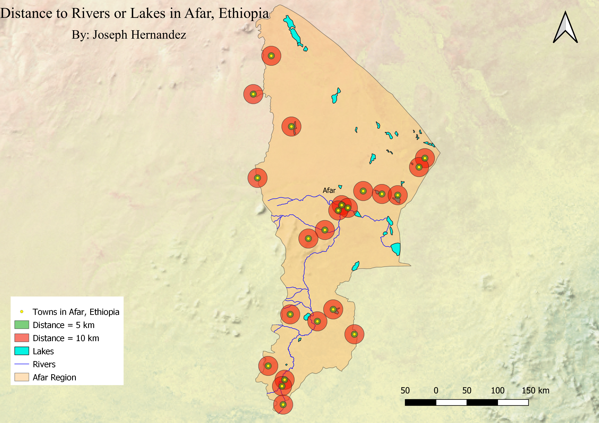

Homework 10: Geoprocessing Analysis
Joseph Hernandez
-How many rivers and lakes are located in Afar, Ethiopia?
-How far are the major towns in Afar from the nearest lake or river?
I chose to create this map because I have heard a lot of news about the ongoing tensions between Ethiopia and Egypt regarding the Nile River. Ethiopia is a "water stressed" country so I thought it would be interesting to see what other sources of freshwater they might have. In order to create this map, I took a shapefile of the entire country of Ethiopia and then I queried the data so that I could focus solely on the area of Afar, Ethiopia. Next, I inserted shapefiles that included all of Ethiopia's rivers and lakes and then I used the intersect tool in order to only display the rivers and lakes that are within the Afar region. Next, I inserted a shapefile of all the major towns in Afar and then I set buffers of 5 km and 10 km on each of the major towns so that we could see how far each major town is from a river or lake. Then, I inserted a raster layer from NaturalEarth in order to show the terrain of the area. This allows us to see that Afar, Ethiopia has a dry/desert climate which can make accessing water even more difficult.


Data used for this project
Link to Data source
Link to Data source